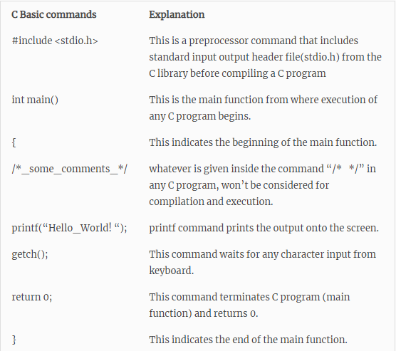

C is a procedural programming language. It was initially developed by Dennis Ritchie between 1969 and 1973. It was mainly developed as a system programming language to write an operating system. The main features of C language include low-level access to memory, a simple set of keywords, and clean style, these features make C language suitable for system programmings like an operating system or compiler development. Many later languages have borrowed syntax/features directly or indirectly from C language. Like syntax of Java, PHP, JavaScript and many other languages are mainly based on C language. C++ is nearly a superset of C language (There are few programs that may compile in C, but not in C++).
After the above discussion, we can formally assess the structure of a C program. By structure, it is meant that any program can be written in this structure only. Writing a C program in any other structure will hence lead to a Compilation Error.
The components of the above structure are:
Header Files Inclusion: The first and foremost component is the inclusion of the Header files in a C program.
A header file is a file with extension .h which contains C function declarations and macro definitions to be shared between several source files.
Some of C Header files:
The next part of a C program is to declare the main() function.
The next part of any C program is the variable declaration. It refers to the variables that are to be used in the function. Please note that in C program, no variable can be used without being declared. Also in a C program, the variables are to be declared before any operation in the function
Body of a function in C program, refers to the operations that are performed in the functions. It can be anything like manipulations, searching, sorting, printing, etc.
The last part in any C program is the return statement. The return statement refers to the returning of the values from a function. This return statement and return value depend upon the return type of the function. For example, if the return type is void, then there will be no return statement. In any other case, there will be a return statement and the return value will be of the type of the specified return type

The basic elements used to construct a simple C program are: the C character set, identifiers and keywords, data types, constants, arrays, declarations , expressions and statements. Let us see how these elements can be combined to form more comprehensive program components-
C uses letters A to Z in lowercase and uppercase, the digits 0 to 9, certain special characters, and white spaces to form basic program elements (e.g variables , constants, expressions etc.)
The special characters are:
+ – * / = % & # ! ? ^ ” ‘ / | < > ( ) [ ] { } : ; . , ~ @ !
The white spaces used in C programs are: blank space, horizontal tab, carriage return, new line and form feed.
Identifiers are names given to various program elements such as variables, functions, and arrays. Identifiers consist of letters and digits, in any order, except that the first character must be a letter. Both uppercase and lowercase letters are permitted and the underscore may also be used, as it is also regarded as a letter. Uppercase and lowercase letters are not equivalent, thus not interchangeable. This is why it is said that C is case sensitive. An identifier can be arbitrarily long.
The same identifier may denote different entities in the same program, for example, a variable and an array may be denoted by the same identifier, example below.
int sum, average, A[10]; // sum, average and the array name A are all identifiers.
Keywords are reserved words that have standard predefined meanings. These keywords can only be used for their intended purpose; they cannot be used as programmer defined identifiers. Examples of some keywords are: int, main, void, if.
Data values passed in a program may be of different types. Each of these data types are represented differently within the computer’s memory and have different memory requirements. These data types can be augmented by the use of data type qualifiers/modifiers.
Keywords are reserved words that have standard predefined meanings. These keywords can only be used for their intended purpose; they cannot be used as programmer defined identifiers. Examples of some keywords are: int, main, void, if.
Thus from the above we came to understand the basics of the C programming Stay tuned! It's very interesting.